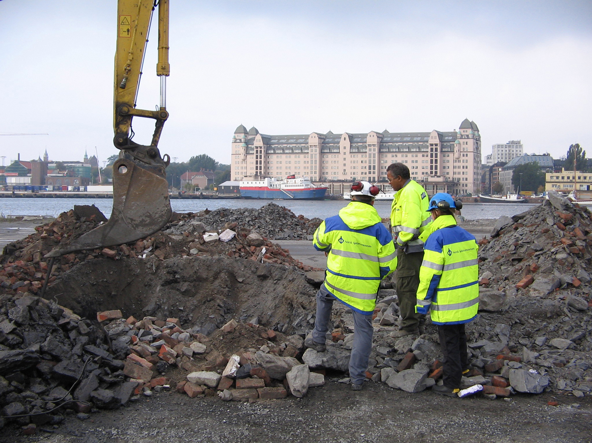

Havner, kaier og marine sedimenter
Miljøfaglige vurderinger i sjønære prosjekter med sedimentdata, tiltaksbehov, resipientforståelse og myndighetsdialog, f.eks. i Oslo havneområder og ved legging av senketunnel på fjordbunnen ved Operaen, se bilde.